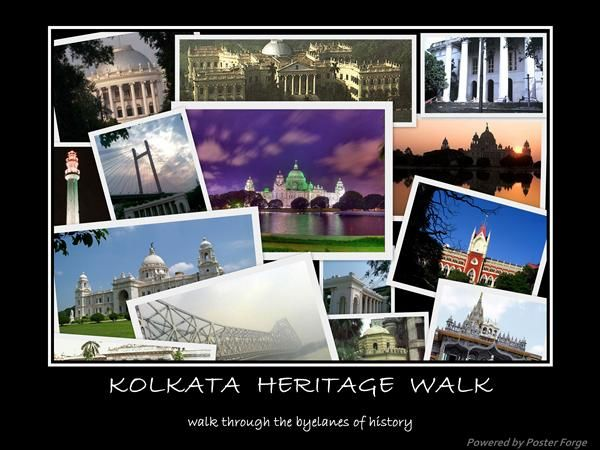

ABOUT KOLKATA

Kolkata known historically in English as Calcutta is the capital of the Indian state of West Bengal. Located on the east bank of the Hooghly river, it is the principal commercial, cultural, and educational centre of East India, while the Port of Kolkata is India's oldest operating port as well as its sole major riverine port. As of 2011, the city had 4.5 million residents; the urban agglomeration, which comprises the city and its suburbs, was home to approximately 14.1 million, making it the third-most populous metropolitan area in India. As of 2008
HERITAGE OF KOLKATA